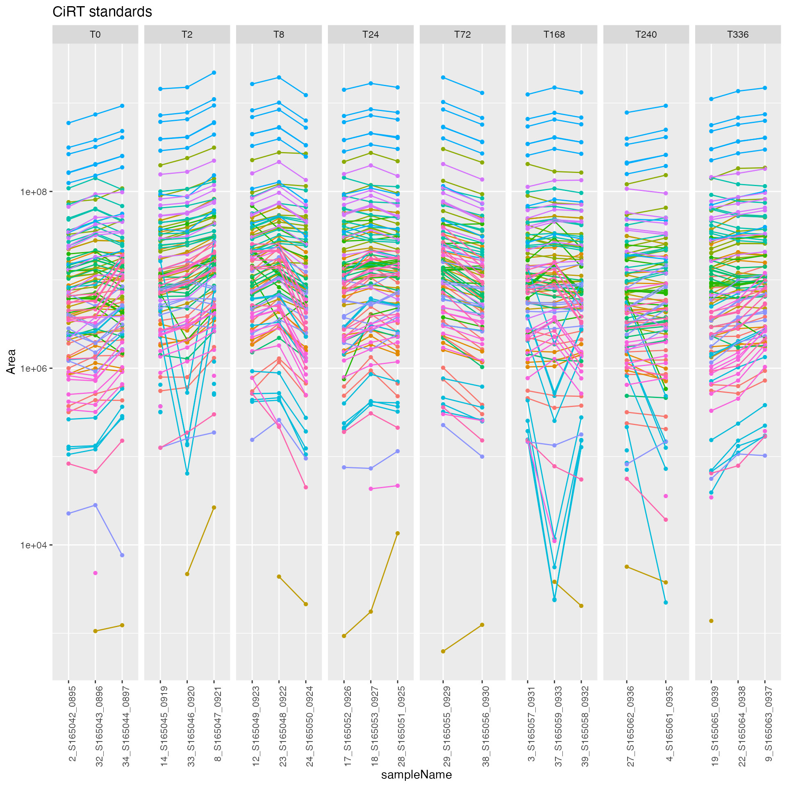
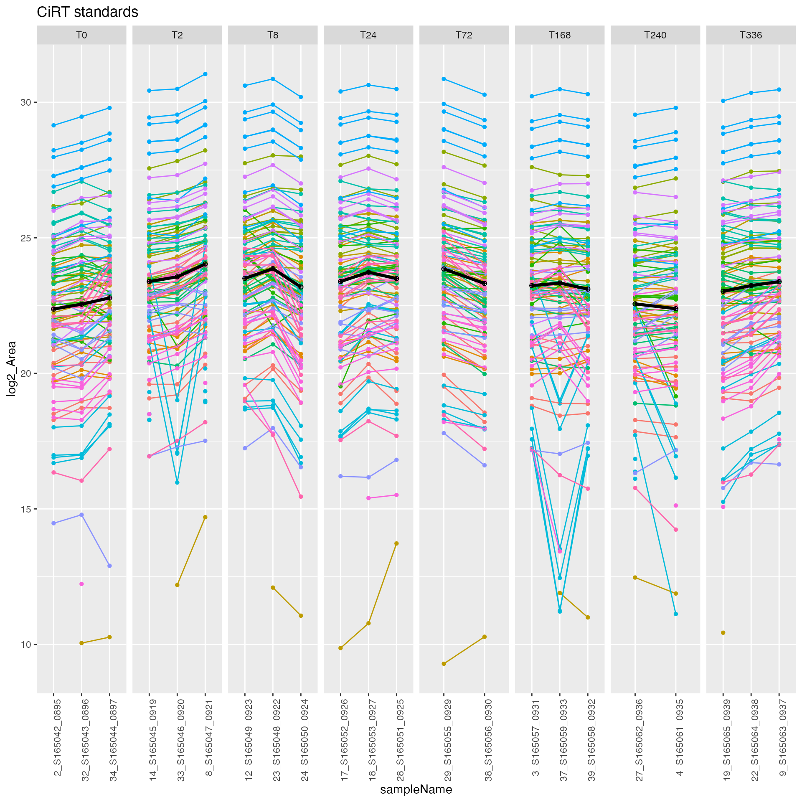
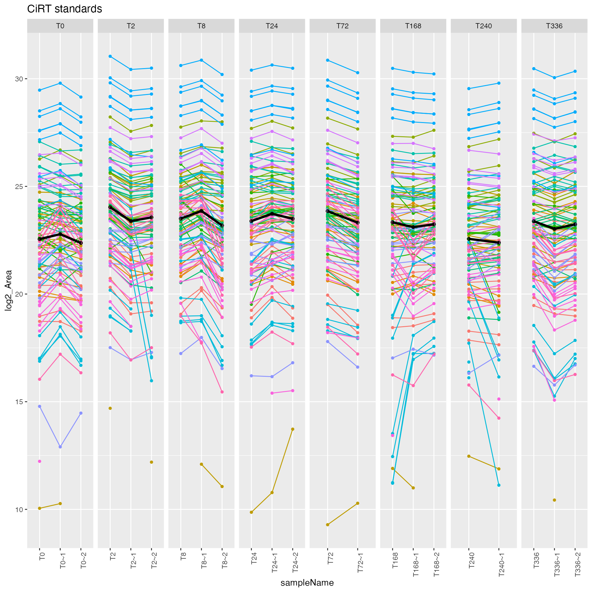
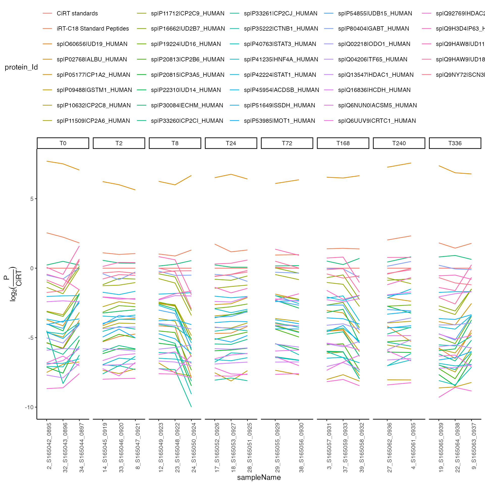
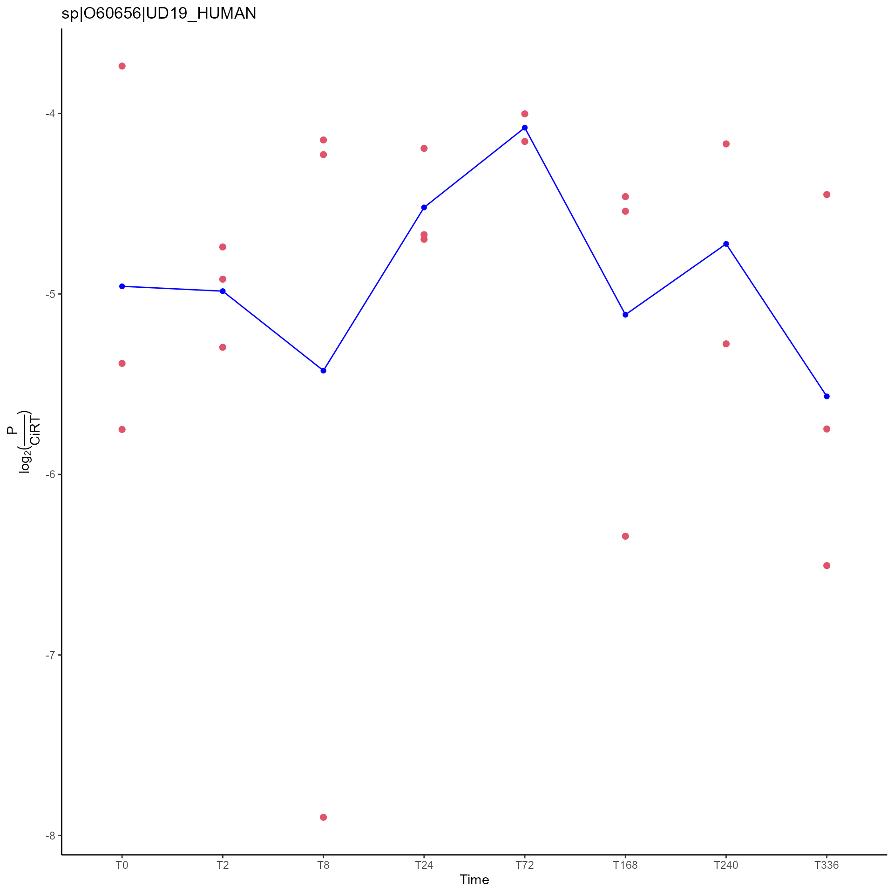
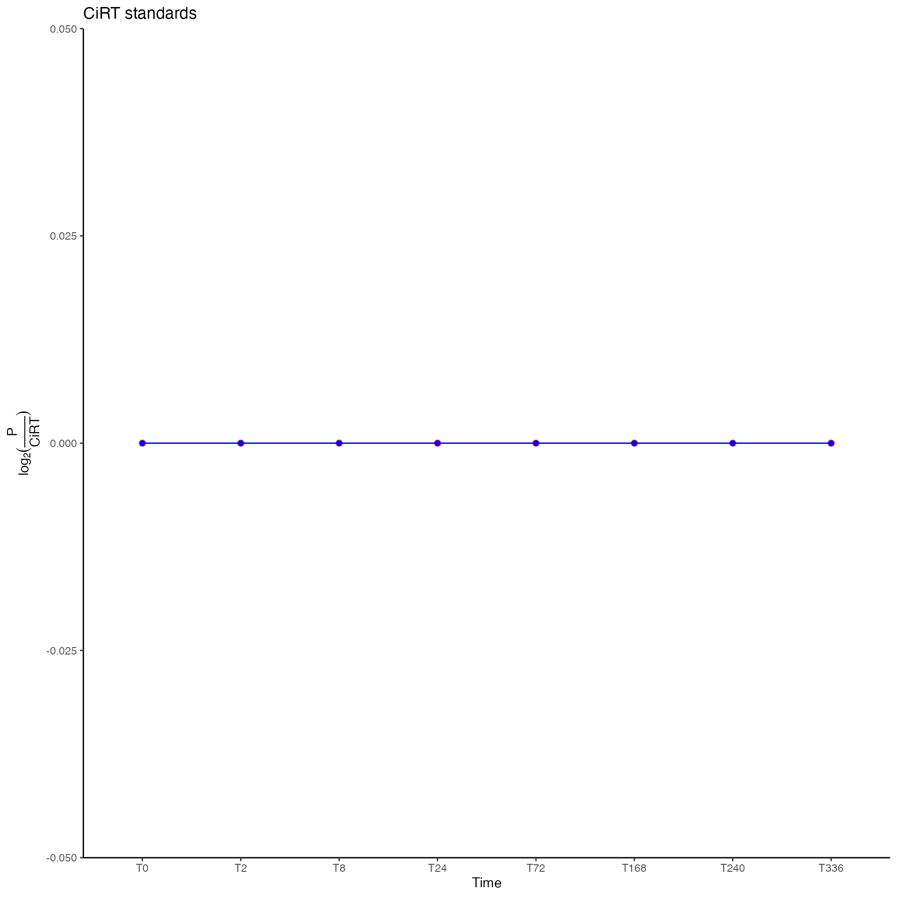

../vignettes/Supplement_TidyAnalysis_Skyline_PRM.Rmd
Supplement_TidyAnalysis_Skyline_PRM.RmdExample of visualizing and normalizing PRM data using an internal CiRT peptides (S. Parker 2015 MCP).
rm(list = ls())
library(conflicted)
library(readxl)
library(yaml)
library(prolfqua)
conflicted::conflict_prefer("filter", "dplyr")
data("data_skylinePRMSample_A")
outdir <- tempdir()
skylinePRMSampleData <- data_skylinePRMSample_A$data
skylineconfig <-
create_config_Skyline(isotopeLabel = "Isotope.Label.Type",
ident_qValue = "Detection.Q.Value")
skylineconfig$table$factors[["Time"]] = "Sampling.Time.Point"
resData <- setup_analysis(skylinePRMSampleData, skylineconfig)Reorder factors for improved display.
xx <- unique(resData$Time)
xxord <- order(as.numeric(gsub("T", "", xx)))
resData$Time <-
readr::parse_factor(resData$Time, unique(resData$Time)[xxord])
resData$Area[resData$Area == 0] <- NA
proteinIDsymbol <- rlang::sym(names(skylineconfig$table$hierarchy)[1])
xnested <-
resData |> dplyr::group_by(UQ(proteinIDsymbol)) |> tidyr::nest()
xnested## # A tibble: 37 × 2
## # Groups: protein_Id [37]
## protein_Id data
## <chr> <list>
## 1 CiRT standards <tibble [2,288 × 9]>
## 2 iRT-C18 Standard Peptides <tibble [2,068 × 9]>
## 3 sp|O60656|UD19_HUMAN <tibble [176 × 9]>
## 4 sp|P02768|ALBU_HUMAN <tibble [682 × 9]>
## 5 sp|P05177|CP1A2_HUMAN <tibble [506 × 9]>
## 6 sp|P09488|GSTM1_HUMAN <tibble [330 × 9]>
## 7 sp|P10632|CP2C8_HUMAN <tibble [660 × 9]>
## 8 sp|P11509|CP2A6_HUMAN <tibble [352 × 9]>
## 9 sp|P11712|CP2C9_HUMAN <tibble [352 × 9]>
## 10 sp|P16662|UD2B7_HUMAN <tibble [704 × 9]>
## # … with 27 more rows
figs <-
xnested |> dplyr::mutate(plot = purrr::map2(
data,
UQ(proteinIDsymbol) ,
plot_hierarchies_line,
skylineconfig
))
for (i in 1:nrow(xnested)) {
plot_hierarchies_line(xnested$data[[i]],xnested[[proteinIDsymbol]][i],skylineconfig)
}
print(figs$plot[[1]])
resDataLog <-
prolfqua::transform_work_intensity(resData , skylineconfig, log2)
figs3 <-
intensity_summary_by_hkeys(resDataLog, skylineconfig, medpolishPly)
figs3 <- figs3("nested")
figs3 <-
figs3$xnested |> dplyr::mutate(plotlog = purrr::map2(
data,
UQ(proteinIDsymbol) ,
plot_hierarchies_line,
skylineconfig
))
plot_hierarchies_add_quantline(figs3$plotlog[[1]],
figs3$medpolishPly[[1]],
"medpolish",
skylineconfig)
figs3 <-
figs3 |> dplyr::mutate(
figsMed = purrr::map2(
plotlog,
medpolishPly,
plot_hierarchies_add_quantline,
"medpolish" ,
skylineconfig
)
)
print(figs3$figsMed[[1]])
if (FALSE) {
pdf(file.path(outdir , "allProteinsWithMed.pdf"),
width = 10,
height = 10)
invisible(lapply(figs3$figsMed[1:3], print))
dev.off()
}
table <- skylineconfig$table
protIntensity <-
figs3 |> dplyr::select(table$hierarchyKeys()[1], medpolishPly) |>
tidyr::unnest(cols = "medpolishPly")
CiRT <-
protIntensity |> dplyr::filter(protein_Id == "CiRT standards")
# Normalize py CiRT protein
proteinIntensity <- protIntensity |>
dplyr::inner_join(CiRT,
by = dplyr::setdiff(names(protIntensity),
c("protein_Id", "medpolish")),
suffix = c("", ".CiRT")) |>
dplyr::mutate(log2Med_log2MedCiRT = medpolish - medpolish.CiRT)
p <-
ggplot2::ggplot(
proteinIntensity,
ggplot2::aes(
x = sampleName ,
y = log2Med_log2MedCiRT,
group = protein_Id,
color = protein_Id
)
) +
ggplot2::geom_line() +
ggplot2::facet_grid( ~ Time, scales = "free_x") + ggplot2::theme_classic() +
ggplot2::theme(axis.text.x = ggplot2::element_text(angle = 90, hjust = 1),
legend.position = "top") +
ggplot2::ylab(expression(log[2](frac(P, CiRT))))
p
if (FALSE) {
pdf(file.path(outdir, "allProteinsOnePlot.pdf"))
print(p)
dev.off()
write_tsv(proteinIntensity, path = file.path(outdir, "ProteinQuants.tsv"))
}
protRez3 <-
proteinIntensity |> dplyr::group_by(protein_Id) |> tidyr::nest()
tmp <-
function(x) {
anova(lm(log2Med_log2MedCiRT ~ Time, data = x))
}
protRez3 <- protRez3 |> dplyr::mutate(anova = purrr::map(data, tmp))
protRez3 <- protRez3 |> dplyr::mutate(ba = purrr::map(anova, broom::tidy))
plotProt <- function(data, title) {
ggplot2::ggplot(data, ggplot2::aes(x = Time, y = log2Med_log2MedCiRT)) +
ggplot2::geom_point(fill = "red",
color = 2,
size = 2) +
ggplot2::stat_summary(fun = mean,
geom = "line",
ggplot2::aes(group = 1),
col = "blue") +
ggplot2::stat_summary(fun = mean,
geom = "point",
col = "blue") + ggplot2::ggtitle(title) +
ggplot2::theme_classic() + ggplot2::ylab(expression(log[2](frac(P, CiRT))))
}
plotProt(protRez3$data[[3]], protRez3$protein_Id[[3]])
protRez3 <-
protRez3 |> dplyr::mutate(plot = purrr::map2(data, protein_Id, plotProt))
pdf(file.path(outdir, "allProtFigsNorm.pdf"))
invisible(lapply(protRez3$plot[1:3], print))
dev.off()
plotProtMedian <- function(data, title) {
ggplot2::ggplot(data, ggplot2::aes(x = Time, y = log2Med_log2MedCiRT)) +
ggplot2::geom_point(fill = "red",
color = 2,
size = 2) +
ggplot2::stat_summary(fun = median,
geom = "line",
ggplot2::aes(group = 1),
col = "blue") +
ggplot2::stat_summary(fun = median,
geom = "point",
col = "blue") + ggplot2::ggtitle(title) +
ggplot2::theme_classic() + ggplot2::ylab(expression(log[2](frac(P, CiRT))))
}
protRez3 <-
protRez3 |> dplyr::mutate(plotMedian = purrr::map2(data, protein_Id, plotProtMedian))
protRez3$plotMedian[1]## [[1]]